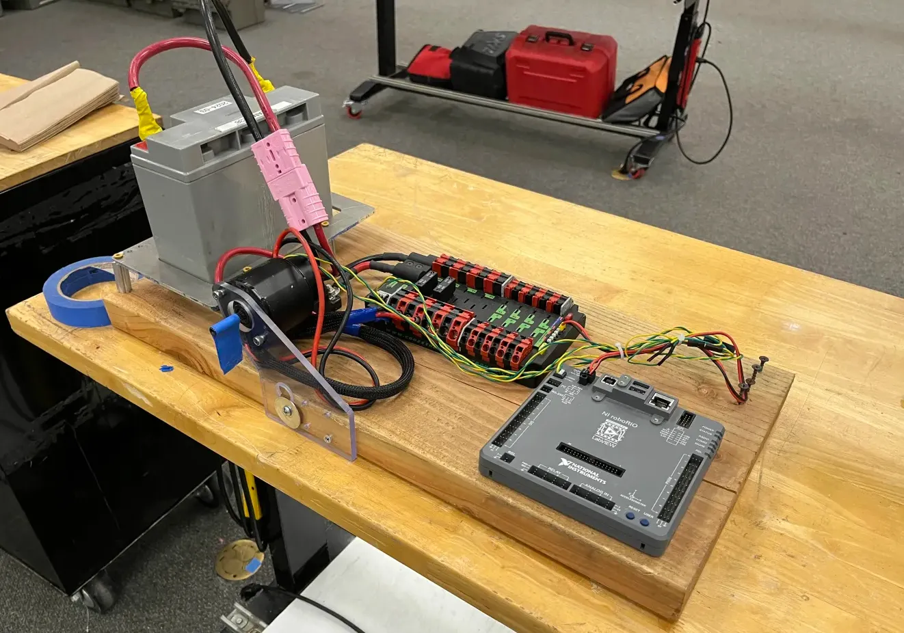
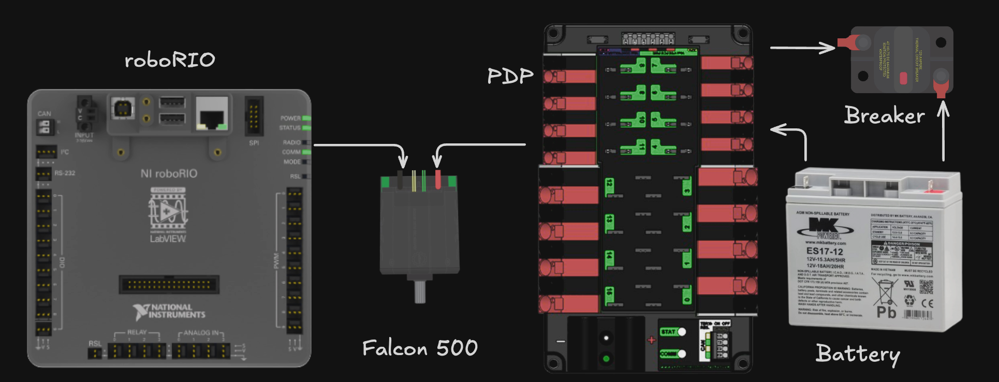
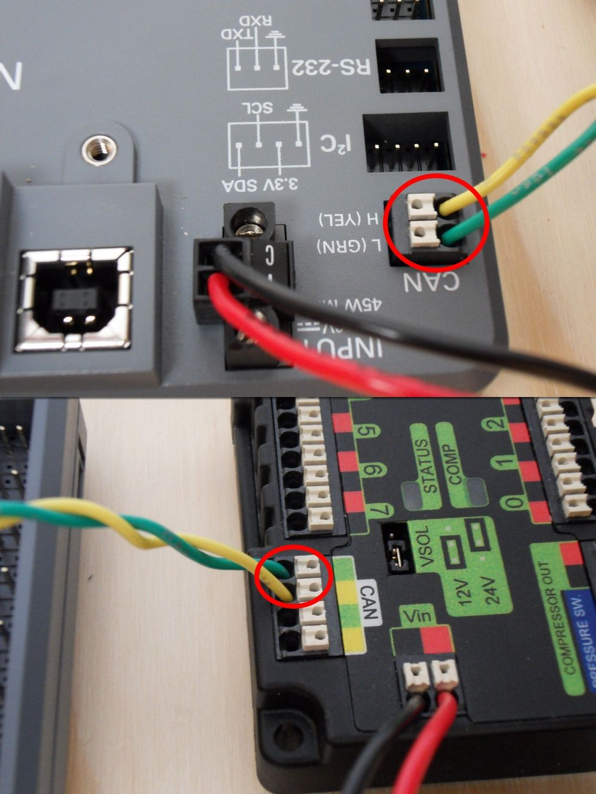
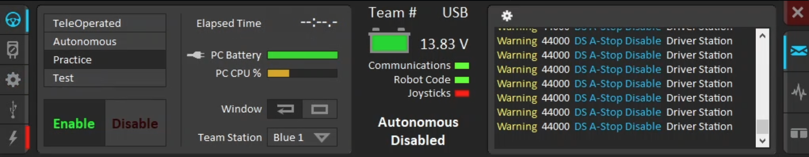
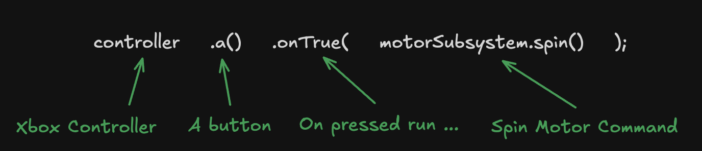
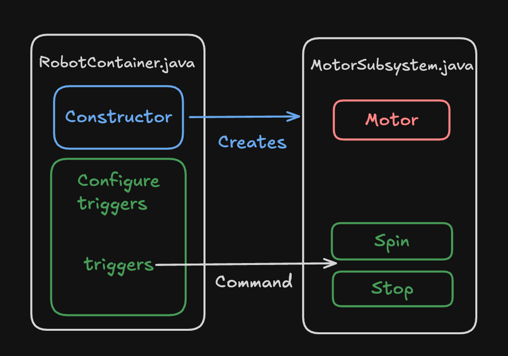

My First Robot Project
For our first programming project we will be focusing on the programming test board. Its a simple board with a motor, computer, and battery that will allow us to test deploying code and control logic.

Test Board Components
To begin lets go over the components of the test board. The test board contains a roborio, the main computer, which runs our robot and communicates with the other components on the board. Next we have a PDP, or power distibution port, which manages the power onboard the circut. It takes in the battery voltage through the breaker and distributes it to all the motors and to the roborio. Finally we have the actual motor, in this case a Falcon 500. The Falcon 500 is a powerful motor with a built in motor controller for precise and accurate movement. Everything is connected through the CAN bus which allows for data transfer between all robot components.


Starting the Code for your Subsystem
Start by opening WPILib VScode on one of the driver station laptops. Once VScode is opened click the terminal tab bar in the top bar and click new terminal. Once the terminal is opened you can clone the codebase and open it following the instructions below.
Terminal Basics: CD
The cd command is commonly used when navigating the terminal. It allows you to navigate to different folders in the terminal. cd <folder> allows you to go into a specific folder. cd .. goes back a folder into the parent folder.
Clone the Codebase
To clone the codebase we need to use the cd command to go to the desktop folder. Once you opened the terminal from the top bar type the following command inside: cd Desktop and press Enter to run it. Then type the following command: git clone https://github.com/6238/ProgrammingTestBoard.git <<YourName>> and press Enter to run it.
Opening in VSCode
Once you have cloned the codebase open the folder in vscode by clicking File -> Open Folder.. and selecting the Desktop/<
Building and Deploying Code
Now that we have a basic frc codebase its time to build and deploy our code!
To build and deploy our code to a robot relies on the command pallette. Open the command pallette with Ctrl+Shift+P and type WPILib deploy and press Enter to deploy.
When you run deploy wpilib will check to see if a robot is connected. Since the platform is not currently connected, it should error. Here, Deploy will open a terminal at the bottom of your screen allowing you to see if any errors occur during the build process. These could be formatting errors, connectino errors, or code mistakes. Since the robot is not connected, if you scroll up you should see an error saying that the roboRIO could not be detected.
To fix this, we need to connect to the test platform. Start by flipping the circut breaker with the battery connected and plugging in an ethernet cable into the roboRIO's ethernet port, connecting it to the driverstation laptop. On the laptop make sure to open the driverstation app through the windows menu. This program allows you to connect the robot and enable it. Once the robot is conncted (you see this on the driverstation app), use the WPILib deploy command again to deploy the code to the robot and test.

Coding our first Subsystem
To code our first ever subsystem type open the search pallette with Ctrl+P and type MotorSubsystem.java and press Enter.
package frc.robot.subsystems;
import edu.wpi.first.wpilibj2.command.SubsystemBase;
public class MotorSubsystem extends SubsystemBase {
public MotorSubsystem() {
}
}
IMPORTANT
Remember to always press ++Ctrl+S++ to save your code after every edit! I have forgotten to do this far too many times :(
public class MotorSubsystem extends SubsystemBase is the line that defines our subsystem class. Classes are like cookie cutters, defining how an object should be structured. We can instantiate classes with the new keyword just like how you would use a cookie cutter to cut out a cookie (object).
extends Subsystem means that our class will be recognized as a subsystem and inherit special propeties.
Finally public MotorSubsystem() is our constructor. It defines what needs to happen whenever a new object is created using that class.
If the code still doesn't make sense, thats ok. Classes, constructors and object are very difficult and require more practice to be able to fully understand. If your interseted in learning more this video has a great explanation for classes, objects, and properties: https://www.youtube.com/watch?v=IUqKuGNasdM
Creating our first MotorController
Now its time to create our first motor controller. This object allows us connect with a motor on our robot and sent control messages to it. In this case, our test platform uses a TalonFX controller so we will use the same object in our code. Modify your code to look like the following:
package frc.robot.subsystems;
import com.ctre.phoenix6.hardware.TalonFX;
import edu.wpi.first.wpilibj2.command.SubsystemBase;
public class MotorSubsystem extends SubsystemBase {
private TalonFX motor; // Define the motor controller variable
public MotorSubsystem() {
motor = new TalonFX(10); // Instantiate the motor controller with an ID of 10
}
}
Here we create a TalonFX motor controller by defining it in the class and then creating it in the contstructor. Notice how the names in code match the names of things in the real world. This is because code often mirrors the mechanism that it tries to control.
We store this motor controller in something called a variable. Variables are like little boxes that can hold our objects when programming. In this case we create a variable called motor that holds a TalonFX motor controller. Note that when creating the controller we use the syntax motor = new TalonFX(10);. This code creates a new instance of the TalonFX class (like using the cookie cutter to create a new cookie) and passes in 10 for the ID meaning, tying that motor controller to the motor with ID 10.
Note
The // symbol defines a comment. All characters on this line after the symbol are not processed by the code and are ignored.
Notice that many of the lines of code end with a semicolon. This is part of the java syntax and the only lines that dont end with semicolons usually end with open or closed braces.
Spinning the Motor
Just a few more steps before we can finally spin the motor! Now we need to create something called a command. Commands are a way of running code in FRC. For our code we only need to know about the simplest type of command: runOnce(). This create a command that will run a function once, about as simple as it gets.
Note
Functions are a way to reuse a piece of code. For example, I can create a function that spins a motor called spin. Then whenever I want to spin the motor, all I have to do is write spin(); and that will run the code inside the spin function.
Lets create a simple runOnce command to spin the motor at a set speed. Modify your code to look like the following:
package frc.robot.subsystems;
import com.ctre.phoenix6.hardware.TalonFX;
import edu.wpi.first.wpilibj2.command.Command;
import edu.wpi.first.wpilibj2.command.SubsystemBase;
public class MotorSubsystem extends SubsystemBase {
private TalonFX motor;
public MotorSubsystem() {
motor = new TalonFX(10);
}
public Command spin() {
return runOnce(() -> motor.setVoltage(3));
}
public Command stop() {
return runOnce(() -> motor.setVoltage(0));
}
}
Here we create two commands. One called spin which sets the motor voltage to 3 volts, and another called stop which sets the motor voltage to 0 volts. Each of these fuctions returns a command that calls a piece of code, in this case the motor.setVoltage function. Note the -> operator. This is a symbol that creates a one line function, allow us to call motor.setVoltage(3) in a function, and then pass that into the runOnce command, all in one line.
Triggers
Our final step before spinning the motor for the very first time. To spin the motor we need to go to RobotContainer.java. To do this open the search pallette with Ctrl+P and search for it. This file contains all the triggers and subsystem setup for our code. In this file write the following code:
package frc.robot;
import edu.wpi.first.wpilibj2.command.Command;
import edu.wpi.first.wpilibj2.command.Commands;
import edu.wpi.first.wpilibj2.command.button.CommandXboxController;
import frc.robot.subsystems.MotorSubsystem;
public class RobotContainer {
public MotorSubsystem motorSubsystem;
public CommandXboxController controller;
public RobotContainer() {
motorSubsystem = new MotorSubsystem();
controller = new CommandXboxController(0);
configureBindings();
}
private void configureBindings() {
controller.a().onTrue(motorSubsystem.spin());
controller.a().onFalse(motorSubsystem.stop());
}
public Command getAutonomousCommand() {
return Commands.print("No autonomous command configured");
}
}
Our code for RobotContainer.java is structured into two parts. First, we create a motorSubsystem and CommandXboxController the same way we did for the TalonFX controller in our MotorSubsystem class. Second, we call the configureBindings() method. This method is where we setup an triggers for our commands.
Here is where the power of commands begins to show. In configure bindings we put controller.a().onTrue(motorSubsystem.spin());. This code exectues in the the following way:

Now that we have written triggers for our commands, its time to test! Deploy the robot code to the test platform, open the driver station, and when ready, click enable and teleop mode in the driver station to test it out!
Here is the final structure of our code:

Challenges
Now that you have officialy coded your first FRC robot its time to try writing a little bit of code yourself. These challenges work in increasing difficulty so make sure to go in order. If you get stuck, spend ~10-20min on your own trying to solve it before asking for help. One of the most important skills you will learn as a programmer is reading documentation and working through problems. I would start with the first easy challenge as they get pretty hard after that and it will help ease you into programming on your own.
Easier Challenges (these are still pretty hard):
-
Try changing the voltage you set the spin motor to. Try any voltage between 0 and 12 volts and see how it effects the motor!
-
Try creating a new command. Look at the two commands we already created and create a new one, called
spinFastthat runs the motor at a higher voltage thanspin. Make sure to bind it to the b button press and bind the b buttons release to your stop command. -
Create a new control scheme. Instead of pressing and releasing to control the motor speed, try something different. For example, when a is pressed, spin, when b is pressed, spin fast, and when c is pressed, stop.
Medium Challenges (these will require some research):
- Create an autonomouse command. Replace the autonomous command in the RobotContainer with a custom command that spins the motor for 1 second and then stops. Hint: use
Commands.sequenceandCommands.waitSecondsThis page may help: Commands Java Doc
The next lessons take this same subsystem apart: what a subsystem is, what a command is, how triggers schedule those commands, then position control and logging. The final test at the end of this section is where those pieces get combined.